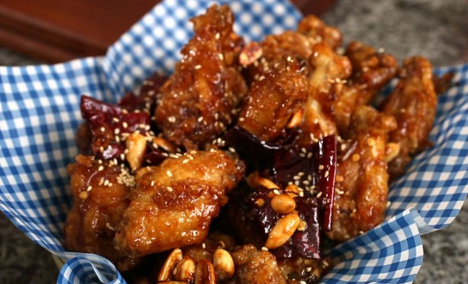

Korean Fried Chicken

Cripsy and crunchy fried chicken. The best you'll ever have!
The true KFC.
If you've never tried Korean fried chicken, you're heavily missing out. Savoury or sweet, but always crispy. It's in a league of its own.
Don't let this experience stop you here. There's many different kinds of Korean fried chicken (my favorite is the "snow cheese"!)
Ingredients
- 3 1/2 lbs chicken wings (about 1.6kg)
- 1/2 tsp kosher salt
- 1/2 tsp ground black pepper
- 1 tsp minced ginger
- 2/3 cup potato or corn starch
- 1/3 cup peanuts (optional)
- 4 cloves minced garlic
- 3-4 large dried red chili peppers, seeded, cut crosswire into 1/3 inch pieces (optional)
- 1/4 cup soy sauce
- 1/2 cup rice syrup or corn syrup
- 1 tbsp white vinegar
- 1 tbsp mustard (optional)
- 1 tbsp brown sugar
- 1 tbsp toasted sesame seeds
- Grapeseed oil (or vegetable oil, peanut oil)
Instructions
Prepare the Chicken
- Cut off the tip of each wing and chop the wing in half. After this is done you should have about 3lbs of chicken, with 24-26 pieces.
- Put the chicken in a bowl and mix with salt, ginger, and ground black pepper by hand.
- Put the potato starch in a bowl and dip each wing in the powder to coat it, one by one. Squeeze each wing to press the coating to it tightly.
Make the sweet, spicy, and sticky sauce
- Heat a large non-stick skillet or wok over MED-HIGH heat. Add 2 tbsps cooking oil, minced garlic, and dried red chili pepper (if used).
- Stir with a wooden spoon until fragrant for about 30 seconds.
- Add soy sauce, rice syrup, vinegar, and mustard sauce (optional). Stir with a wooden spoon and let it bubble for a few minutes.
- Add the brown sugar and continue stirring. Remove from the heat. Set aside.
Fry the chicken
- Put 4 cups of cooking oil in a frying pan or pot and heat it up for 7-8 minutes over HIGH heat.
- See if the oil's ready by dipping a test wing into it. If the oil bubbles, it's hot enough to start frying. Slide the coated wings one by one into the hot oil and cook for about 12-13 minutes, turning over a few times with tongs.
- Take the wings out of the oil and shake them off in a strainer. Turn off the heat, and let the wings sit for a few minutes.
- Reheat the oil and fry the wings again for another 12-15 minutes until they are golden brown and feel super crunchy through the tongs. If your frying pan or pot is not large enough to fry all the chicken at once, divide it into batches as shown in the video. If you use a larger frying pot to cook them all at once, you'll have to use more cooking oil.
- If using peanuts, place them in a slotted spoon or a small mesh container. Carefully dip them into the hot oil, and fry for 15-30 seconds until light golden brown. Transfer to small bowl.
Coat the fried chicken with the sauce
- When the chicken is done, reheat the sauce until it bubbles.
- Add the hot chicken and peanuts (if using) and mix well with a wooden spoon to coat.
- Remove from heat and transfer coated chicken to a large platter. Sprinkle some sesame seeds over top and serve immediately.
This chicken won't lose crunchiness, and you can store it in the fridge for up to 3 days. No dipping sauce is needed, but it goes well with kimchi or pickled radish.